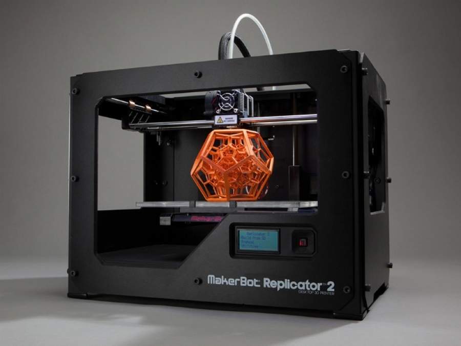
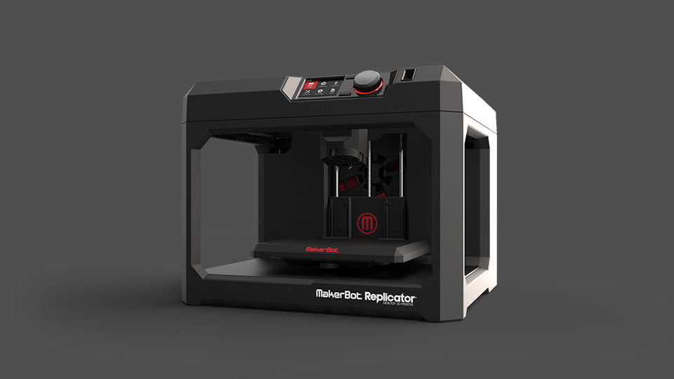

Как это работает
Общий принцип работы трехмерного принтера в теории прост и понятен. В программе для 3D-моделирования создается объект или его часть (крупные модели делят на несколько элементов). Затем файл отправляется для обработки специализированной программой (для формирования G-кода), после чего в дело вступает техника. G-код делит цифровую модель на сотни горизонтальных дорожек, задавая траекторию печатающей каретке. На основание слой за слоем наносится расплавленный материал, создавая вполне осязаемый объект.
Всего существует семь основных технологий, используемых для трехмерной печати, но большая их часть нашла применение только в промышленных целях. Для любительской «пластиковой печати» и малого бизнеса разработаны относительно компактные и недорогие аппараты
Прогресс в области 3D-печати металлических деталей продвигается очень быстро. Преимущества перед устаревшими методами колоссальны: математическое моделирование заданных характеристик, моментальное прототипирование, создание форм, ранее недоступных для машинного исполнения, и т.д. Даже если не слушать «апостолов» и энтузиастов 3D-печати, факты говорят сами за себя. Крупнейшие мировые производители — BMW, Mercedes, Volkswagen, Ford — за последние два года вложили миллиарды в развитие новых технологий. Например, GE купил Concept Laser, Siemens объявила о планах сотрудничества с HP и Trumpf, большинство крупных автопроизводителей заявили о своем намерении использовать новое технологическое оборудование для собственного производства уже в ближайшем будущем.
Дальнейшее развитие 3D-принтеров:
3D-печать в течение ближайших пяти лет войдет в массовый сегмент. Студии печати появятся везде, где есть хотя бы тысяча потенциальных покупателей.
Себестоимость расходных материалов будет неуклонно снижаться как в области полимеров, так и металлических деталей.
3D-печать очень скоро заменит малосерийное производство чего угодно, при этом произойдет заметное снижение цен из-за сокращения издержек на капитальные инвестиции, затрат на логистику, складские мощности и т.д.
Возникнет объемный рынок 3D-моделирования. Появятся студии, рассчитывающие форму деталей и математические формулы их физических характеристик. Значительная часть чертежей будет находиться в открытом бесплатном доступе, индивидуальные заказы будут платными, но разумными и посильными для самого широкого спектра клиентов.
3D-печать создаст новый рынок медицинских услуг, где все более частой рекомендацией будет не лечение или купирование симптомов, а замена пораженных органов на новые, выращенные из собственных клеток пациента.
Строительная отрасль переживет значительные метаморфозы, связанные с массовым, индивидуальным, недорогим строительством. Вероятнее всего, будущие проекты будут реализовываться в концепции «новой урбанистики».
Россия войдет на этот рынок без какого-либо заметного отставания от мира, более того, займет прочную нишу в области 3D-моделирования и разработки ПО для печати.
Современная 3D-печать использует металл и полимеры: твердые или гибкие, жесткие или мягкие, горючие или несгораемые, которые применяются везде — от производства и строительства, медицины и электроники до фэшн-индустрии и даже изобразительного искусства.
Технология трехмерной печати появилась относительно давно появилась и на данный момент охватывает огромный диапозон областей применения, однако изначально он не обрел особой популярности, и спустя время, данную технологию стали активно модернизировать и тогда был раскрыт полный потенциал трехмерной печати.